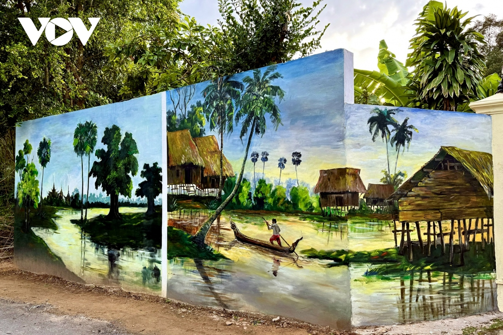
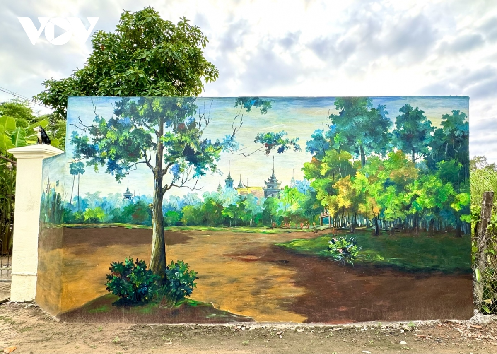
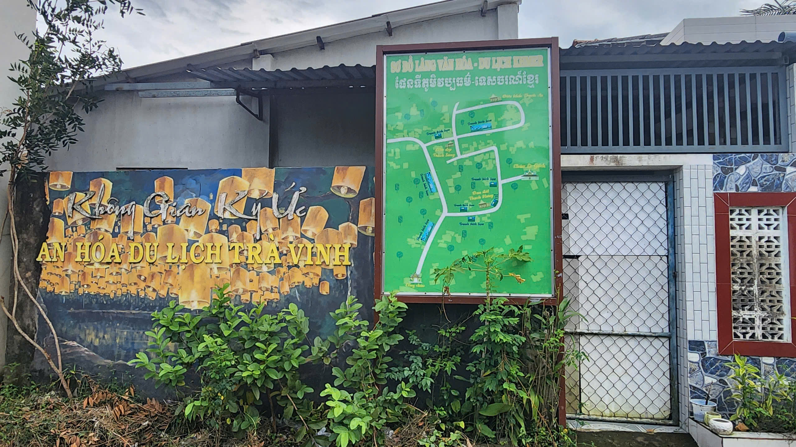

Đang tải di sản…
Công trình số hóa di tích do Đoàn TNCS Hồ Chí Minh xã Song Lộc, tỉnh Vĩnh Long thực hiện – đưa di sản đến gần hơn với mọi người.


Hiểu rằng di sản chỉ thật sự sống khi được nhiều người biết đến, Đoàn TNCS Hồ Chí Minh xã Song Lộc triển khai công trình số hóa các điểm di tích tiêu biểu trong khu vực: Bờ Lũy – chùa Lò Gạch và Làng bích họa “Không gian ký ức”.
Công trình giúp người dân, du khách và thế hệ trẻ dễ dàng tiếp cận thông tin, hiện vật, hình ảnh về di sản ngay trên điện thoại và máy tính.
Chọn một điểm đến để xem thông tin, hiện vật và hình ảnh chi tiết.
Ngôi chùa Kompong Thmo xây bằng gạch, một trong những ngôi chùa cổ nhất đất Trà Vinh.
Xem chi tiết ➜
78 bích họa “Không gian ký ức” tái hiện đời sống, nghề truyền thống và tín ngưỡng của người Khmer.
Xem chi tiết ➜Từ khảo sát thực địa đến công bố trên môi trường số – mỗi bước đều có sự tham gia của đoàn viên, thanh niên.
Tìm hiểu, ghi chép thông tin và lắng nghe nhân chứng tại di tích.
Chụp ảnh, quay video, ghi nhận hiện vật và bích họa.
Xử lý, biên tập, hệ thống hóa nội dung thành kho dữ liệu số.
Công bố trên website, mạng xã hội và các hoạt động cộng đồng.
Mỗi bức ảnh được lưu lại, mỗi câu chuyện được kể tiếp là một đóng góp nhỏ của tuổi trẻ để ký ức văn hóa không phai mờ theo năm tháng.